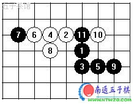

这节课我们要一起学习禁手，因此首先要知道禁手是什么？
1、禁手存在的范围
我们知道无禁规则中是没有禁手的，不论黑白，只要能连五就算取胜了。禁手只存在于有禁规则中，比如Rif规则(国际连珠联盟制定的职业规则)。
再一个，我们要明确，只有先行者一方有禁手，通常执黑先行，因此只有执黑者一方才有禁手，而执白后行者一方是没有禁手的，白方行棋不受禁手规则的约束。
2、禁手的种类
黑棋禁手包括三三、四四、四三三、四四三、长连5种。
三三禁手
黑方走一着在无子交叉点上同时形成了二个或二个以上活三。(见图1，X点均为三三禁手)
四四禁手
黑方走一着在无子交叉点上同时形成了二个或二个以上的四。(见图2、图3，X点均为四四禁手)
四三三禁手
图4中，黑棋在X点落子后，将会形成一个四和两个活三，X点就是四三三禁手点。(四三三禁手实际上是三三禁手的衍生，继续衍生的话可以形成四三三三禁手等)
四四三禁手(包括四四四禁手)
图5中，黑棋在X点落子后，将会形成两个四和一个活三，X点就是四四三禁手点；黑棋在Y点落子后，将会形成三个四，Y点就是四四四禁手点。(四四三禁手实际上是四四禁手的衍生，继续衍生的话可以形成四四四三禁手等)
长连禁手
长连指在一条直线或斜线上，下成连续5个以上的棋形，图6就是几种长连的图例，只要黑棋走出连续5个以上就是禁手。通常有六长连，七长连，八长连，最长为九长连。
3、禁手的定义
根据常见禁手的种类，我们来总结一下禁手的定义，当黑棋落子之后：
同时直接形成3个或3个以上的先手(四三三或者四四三)；或者同时形成两个先手，不是四三，包括三三、四三；或者长连；
没有形成五连。
这里要注意两点：
关于先手含义的理解。什么是先手，这里的先手是指活三(能形成活四)或者四，它们有可能成为五连的。
五连与禁手同时形成算作什么？比如五三三、或者五四四等，按照Rif规则，五连为最大，当同时形成五连和三三或者四四禁手的时候，不算作禁手，而是五连获胜。
同时形成。先后形成的双活三不能算作禁手的，如下图。 虽然也有两个活三，但不能算作禁手


第一讲，全明白了。给自己100分。看第二讲。
对禁手的理解还需在实战中加深理解，比如在作《三手胜题解》时遇到这样一个局面，在黑13、白14后，本在黑15一点双杀，但以为这是三三禁手不能走，结果始终没能破解，后来看到三三禁手的图解，才明白过来，很顺利地破解了。